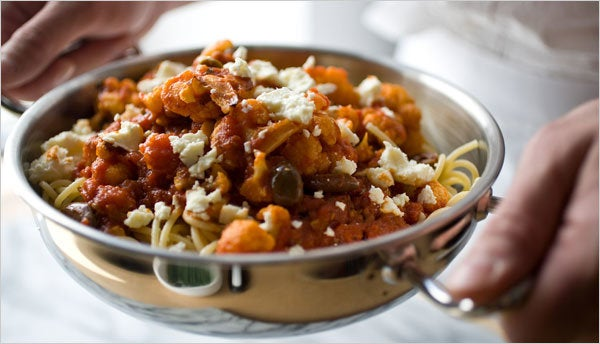

Spaghetti with Roasted Cauliflower

Description
Perhaps because cauliflower is on the bland side and Mediterranean black olives have such a pronounced flavor,
the
two go beautifully together. In Italy, Greece and in North Africa, you find the triumvirate of cauliflower,
tomatoes
and olives in all sorts of dishes.
Ingredients
- ½ medium head of cauliflower, broken into florets
- 2 tablespoons extra virgin olive oil
- 2 garlic cloves, minced
- ¼ to ½ teaspoon red pepper flakes, to taste
- 1 (14-ounce) can chopped tomatoes, with juice
- Pinch of sugar
- 1 teaspoon fresh thyme leaves, or ½ teaspoon dried thyme
- Salt
- freshly ground pepper
- 12 kalamata olives, pitted and cut in half lengthwise
- ¾ pound spaghetti
- 2 ounces either feta (crumbled), ricotta salata, Parmesan, or a mix of Parmesan and Pecorino (grated)
Steps
- Preheat oven to 400 degrees. Bring a large pot of generously salted water to a boil and add the cauliflower.
Blanch for two minutes and transfer to a bowl of ice water. Drain and blot dry. Cover the pot; you’ll use the water
again for the pasta. Quarter the cauliflower florets, toss with 1 tablespoon of olive oil and salt generously.
Transfer to a baking sheet, place in the oven and roast 30 minutes, stirring from time to time, until tender and lightly
browned. Remove from the oven and set aside.
- Meanwhile, in a wide, nonstick frying pan or a 3-quart saucepan, heat the remaining oil over medium heat and
add the garlic and red pepper flakes. Cook, stirring, until fragrant, about one minute. Add the tomatoes, sugar,
thyme and salt, and bring to a simmer. Simmer over medium-low heat, stirring often, until thick, 15 to 20 minutes.
Stir in the cauliflower and the olives, and simmer a few minutes more. Taste and adjust seasonings.
- Bring the water back to a rolling boil. Add the spaghetti and cook until the pasta is al dente, usually
about 10 minutes. Drain and toss with the cauliflower-tomato mixture. Sprinkle the cheese over the top and serve at
once.